Ecological information is accumulated across numerous independent studies that describe interactions among biotic and abiotic components of ecosystems. Although this literature contains a wealth of ecological information, it is dispersed across publications, expressed using diverse statistical measures, and often communicated qualitatively. Consequently, ecological understanding remains fragmented rather than synthesized into coherent quantitative networks.
This fragmentation is unavoidable. Ecological systems are high-dimensional, and no individual study can simultaneously measure all relevant abiotic and biotic variables. Furthermore, ecological understanding develops as new mechanisms and interactions are better understood. As a result, ecological networks are necessarily incomplete and continuously updated from scattered information.
Existing syntheses frequently describe interactions only as positive or negative relationships. While such qualitative descriptions are useful for conceptual understanding, they provide little information about the magnitude of ecological responses. Conversely, conventional meta-analyses summarize information using standardized effect sizes, such as Cohen’s d (1988),
while the enable comparison among study, they remove the original measurement units. Consequently, these effect sizes are difficult to interpret directly in ecological prediction because identical standardized effects can correspond to very different absolute ecological changes (Baguley, 2009; Tukey, 1969).
For predictive ecological networks, quantities expressed in natural units are often more informative. For example, estimating the change in EPT abundance associated with a 1 decline in dissolved oxygen yields a relationship that can be directly applied to field observations, propagated through ecological networks, and evaluated against future measurements. Such quantities possess immediate operational meaning for prediction and management.
However, no general framework currently exists for systematically combining these heterogeneous quantitative relationships into an evolving ecological network. We therefore introduce the Posterior Predictive Meta-analytic Network (PPMN), a modular framework that synthesizes dispersed ecological information into a coherent predictive network. The PPMN combines Bayesian meta-analysis, probabilistic simulation, network modelling, and sequential updating to estimate and propagate ecological relationships without requiring a complete multivariate dataset. The framework supports prediction, structural evaluation, scenario exploration, and continual refinement as new information becomes available. In this way, qualitative ecological understanding is progressively formalized into an updateable quantitative network.
Building blocks
A PPMN describes an ecological system as a generalized directed Bayesian network. Vertices (nodes), represent ecological variables, whereas directed edges (links), are represented by parameterized edge-functions. Each edge-function contains one or more model parameters. Information about these parameters is represented by probability distributions rather than by single fixed values. Together, the network structure, edge-functions, and parameter distributions determine the predictive behavior of the PPMN.
The figure below illustrates a simple PPMN containing four variables and three parameterized edge-functions. For each edge-function, information from prior distributions and study-derived estimates is synthesized into a posterior parameter distribution.
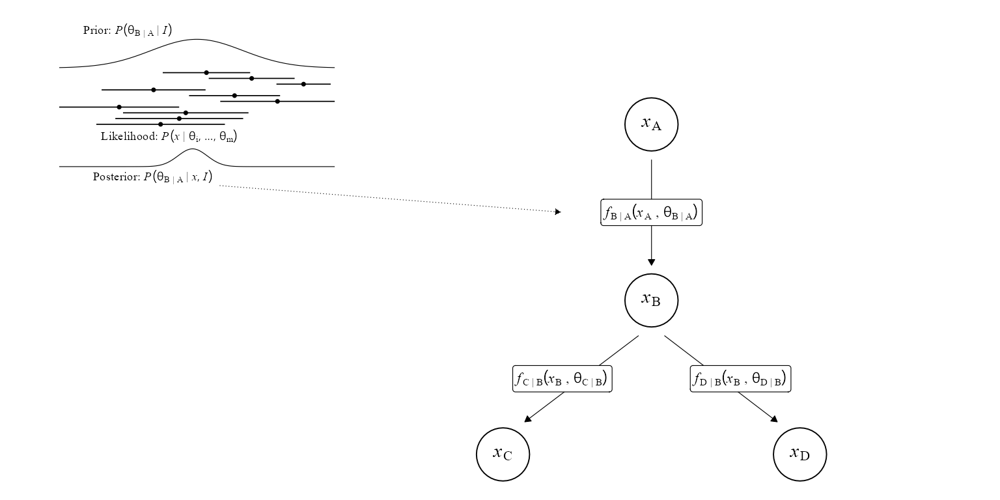
Constructing a PPMN therefore requires two related specifications: the directed network structure and the parameterized edge-functions associated with each incoming edge. The following section shows how these components are defined in the package.
Specifying network structure
We begin by defining the set of variables () that constitute the network and specifying the directed relationships among them. Each non-root vertex must be associated with at least one edge function that maps its parent variable(s) () to a child vertex (). An edge function is expressed as:
where (f_{c|p}) represents the mathematical relationship between the parent and child variables, and (_{c|p}) denotes the corresponding set of model parameters.
As an example, consider the relationship between Total Phosphorus (TP) and Chlorophyll-a (Chl). In the example dataset (example4), models fitted to data from different studies provide estimates for two parameters: the intercept (b0, (_0)) and slope (b1, (_1)). These estimates can subsequently be synthesized through meta-analysis to inform a single edge function connecting TP to Chl. The mathematical relationship is expressed as follows:
The expression above describes the relationship between the dependent and independent variables and identifies the functional form used in the PPMN. However, it does not explicitly show the complete mathematical equation. The observant reader may recognize that the fitted model is essentially a linear equation on the logarithmic scale, where the dependent variable is modeled using a log-link function and the independent variable is log-transformed. The deterministic component of this GLM is therefore expressed as (), where () represents the expected response. To obtain predictions on the original response scale, we apply the inverse link function. The resulting predictive equation is presented below.
A side note: A GLM with a log-link models , whereas an ordinary linear regression fitted to models . These are not generally equivalent, and exponentiating predictions from the latter does not automatically recover the arithmetic mean of . Nonetheless it often provides a decent approximation to the underlying pattern.
To construct a PPMN, we first need to
fit models to the available data and extract their parameter estimates
(estimate) and corresponding standard errors
(error). Additionally, we must specify the functional
relationship between the dependent and independent variables, including
any transformations applied to the independent variables.
The example data frame (example4), displayed below,
illustrates how this information should be organized. Six columns are
required: function, transformation,
edge, parameter, estimate, and
error.
The estimate column contains the numerical estimates of the model parameters, while error contains their corresponding standard errors. The parameter column identifies which parameter each estimate and standard error belong to. For a simple linear model, these are b0 () and b1 (), commonly referred to as the intercept and slope, respectively.
The edge column specifies the relationship between the dependent and
independent variables using the conventional formula notation of
lm() or glm(), such as Chl ~ TP.
The transformation column indicates whether the independent variables
have been transformed. Importantly, the specified transformation is
applied to all independent variables within an edge function; individual
transformations for separate predictors are not currently supported.
The function column defines the mathematical form of the relationship between the dependent and independent variables. The PPMN supports different functional forms, each potentially requiring different types and numbers of parameters. Consequently, parameters are not necessarily restricted to intercepts and slopes. Additional functions can also be incorporated into the library. We will return to the currently available functions later.
Finally, example4 includes the optional columns
Source, Authors, and Comment.
Although these are not required to construct the PPMN, they illustrate
the additional information typically recorded during a meta-analysis.
Retaining such information is useful for documenting the origin of
parameter estimates and maintaining transparency and traceability
throughout the synthesis process.
#Load example
data("example4")
#Display head
head(example4)
#> # A tibble: 6 × 9
#> Source Authors Comment `function` transformation edge parameter estimate
#> <chr> <chr> <lgl> <chr> <chr> <chr> <chr> <dbl>
#> 1 A A NA log log Chl~TP b0 -0.8
#> 2 A A NA log log Chl~TP b1 1.1
#> 3 B A NA log log Chl~TP b0 -0.2
#> 4 B A NA log log Chl~TP b1 0.93
#> 5 C C NA log log Chl~TP b0 -1.1
#> 6 C C NA log log Chl~TP b1 1.05
#> # ℹ 1 more variable: error <dbl>Each of the fitted models (Source = A, B, C, D, E) was a Generalized Linear Model (GLM) with a log-link function and a log-transformed independent variable. The meta-analytic data frame can contain estimates of both the intercept and slope, although it is also possible to provide estimates for only one of these parameters.
To identify the deterministic component of the GLM, the function
column is set to "log", indicating the use of a log-link
function. Since the independent variable was also log-transformed, the
transformed column is set to "log". Alternatively, a
square-root transformation ("sqrt") can be specified where
appropriate. If no transformation was applied to the independent
variable, the corresponding cell should be left empty.
Additional transformations can be incorporated into the HeMiE library upon request.
Build PPMN function
We now have a meta-analytic data frame (example4)
containing the information needed to synthesize the foundational PPMN,
which, at this stage, consists of a single edge function. To connect
this information to the desired network structure, we use the
build_ppmn() function. This function constructs the network
and performs the meta-analysis by matching the function, edge, and
transformation columns in the data frame to the corresponding
edge-function specifications.
To establish these connections, we first define a formula that
uniquely identifies each edge function, as demonstrated below. In this
example, the formula specifies the functional form using
fun = "log", the relationship between the dependent and
independent variables using edge = "Chl~TP", and the
transformation using trans = "log". If no transformation is
required, the trans argument can simply be omitted from the formula.
The PPMN aims to make combine all potential available information. To achieve this, it employs an empirical Bayesian meta-analysis that combines parameter estimates obtained from published studies with prior information that cannot be directly incorporated through model fitting, such as expert opinion or theoretical expectations.
Both the prior distributions and the sampling distributions of the
estimated parameters are assumed to follow a Gaussian distribution.
Consequently, each parameter is characterized by its mean (mu,
)
and standard error (se). For each parameter b_0, b_1, …, b_n within an
edge function, the prior mean is specified using
prior_mu_b0, prior_mu_b1, and so forth, while
the corresponding prior standard error is specified using
prior_se_b0, prior_se_b1, etc.
If no prior information is provided, the prior mean defaults to 0 and the prior standard error to 1000, representing a weakly informative default prior over a broad parameter range.
Additionally, prior distributions can be truncated to restrict
parameter values to a predefined range. The lower truncation boundary is
specified using trunc_a_b0, trunc_a_b1, etc.,
while the upper boundary is specified using trunc_b_b0,
trunc_b_b1, etc. This allows ecological or theoretical
constraints, such as requiring a parameter to be strictly positive or
negative, to be incorporated directly into the prior specification.
formula=list(c(fun="log", edge="Chl~TP", trans="log",
prior_mu_b0=-0.5, prior_se_b0=0.5,
prior_mu_b1=1, prior_se_b1=0.5, trunc_a_b1=0))In our example, we assume that prior information about the model parameters is already available. For the intercept (), we specify a normal prior distribution with a mean of and a standard deviation of . This gives an approximate 95% interval ranging from to .
Similarly, for the slope ((_1)), we specify a normal prior distribution with a mean of 1 and a standard deviation of 0.5, resulting in an approximate 95% interval between (1 - 2 = 0) and (1 + 2 = 2). Additionally, we assume that the relationship between TP and Chl must be positive. We therefore truncate the slope’s prior distribution at zero by specifying trunc_a_b1 = 0, excluding negative parameter values.
Together, these prior specifications and the model formula define a single edge function connecting TP to Chl.
At this point, we have all the necessary ingredients to construct the
foundational PPMN: the network formula, prior information, and
meta-data. These can now be supplied to the build_ppmn()
function, as demonstrated below.
foundational_ppmn <- build_ppmn(formula = formula, data = example4,
vertex_height = 0.14,
vertex_width = 0.02,
fun_width = 0.1,
fun_height = 0.25)After constructing the foundational PPMN, the relationship represented by the single edge function can be visualized as a Directed Acyclic Graph (DAG), illustrating the direction of the association between the parent and child variables.
foundational_ppmn$PlotDAG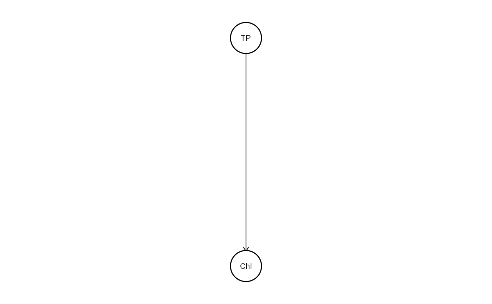
Alternatively, the network can be visualized as a Directed Bipartite Network (DBN), in which circles represent the variables (vertices) and boxes represent the edge functions connecting them. The arrows indicate the direction of the relationships within the network.
foundational_ppmn$PlotDBN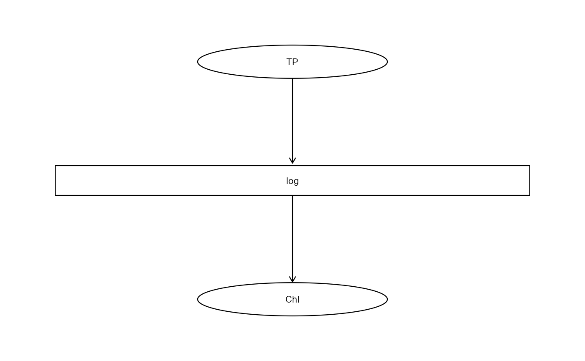
A slightly more complex example illustrates how multiple predictors can be incorporated into an edge function and how successive edge functions can be connected within a network. Suppose we wish to predict chlorophyll-a (Chl) concentrations from total nitrogen (TN) and total phosphorus (TP), expressed as Chl ~ TN + TP. The predicted chlorophyll-a concentration is then used to estimate phytoplankton taxa richness (Taxa ~ Chl). Together, these two edge functions form a network in which TN and TP are connected to taxa richness through Chl. The mathematical expressions defining both edge functions are provided below.
and
Both edge functions are then combined into a single network, as illustrated below.
The network formula is specified below. One additional feature is the inclusion of two alternative priors for the edge function Taxa ~ Chl. Suppose two independent researchers, managers, or estimation methods provide different prior expectations for the same model parameters. Rather than selecting one source a priori, both can be incorporated to represent uncertainty arising from alternative sources of information. The meta-analytic component of the PPMN combines these alternative prior specifications through Bayesian Model Averaging (BMA), allowing each to contribute to the synthesized parameter estimates.
After constructing the foundational PPMN, we visualize its structure as a DBN, providing a graphical overview of the variables and their relationships.
#Load example
data(example5)
#Display first rows
head(example5)
#> # A tibble: 6 × 9
#> Source Authors Comment `function` transformation edge parameter estimate
#> <chr> <chr> <lgl> <chr> <chr> <chr> <chr> <dbl>
#> 1 A A NA log log Chl~TN+TP b0 -0.8
#> 2 A A NA log log Chl~TN+TP b1 0.34
#> 3 A A NA log log Chl~TN+TP b2 1.1
#> 4 B B NA log log Chl~TN+TP b0 -0.2
#> 5 B B NA log log Chl~TN+TP b1 0.7
#> 6 B B NA log log Chl~TN+TP b2 0.93
#> # ℹ 1 more variable: error <dbl>
#Create a formula
formula=list(c(fun="log", edge="Chl~TN+TP", trans="log",
prior_mu_b0=-0.5, prior_se_b0=0.5,
prior_mu_b1=0.5, prior_se_b1=0.5, trunc_a_b1=0,
prior_mu_b2=1, prior_se_b2=0.5, trunc_a_b2=0),
c(fun="log", edge="Taxa~Chl", trans="log",
prior_mu_b0=0, prior_se_b0=5,
prior_mu_b1=c(0.3, 0.5), prior_se_b1=c(0.5, 1), trunc_a_b1=0))
#Build the foundational PPMN
foundational_ppmn <- build_ppmn(formula = formula, data = example5,
vertex_width = 0.07,
fun_width = 0.08)
#Display the Directed Bipartite Network
foundational_ppmn$PlotDBN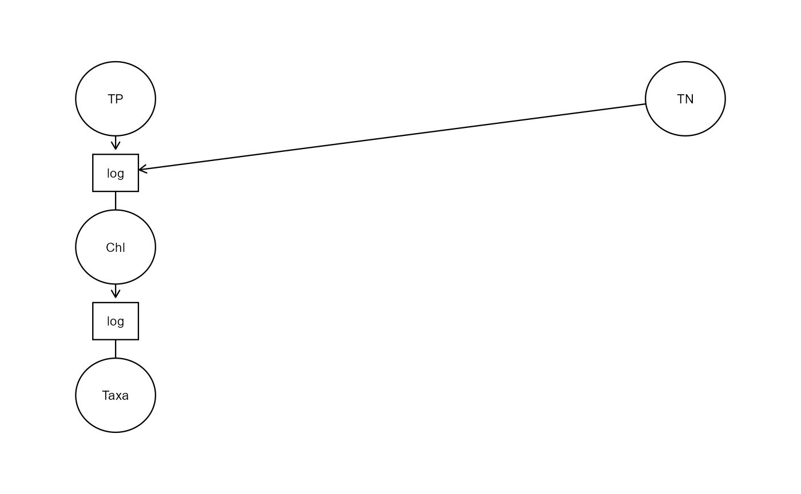
We can also inspect the structure of the synthesized PPMN by displaying a summary of the network in tabular form. The summary provides an overview of the number of vertices, the total number of synthesized parameters, and the number of parameter estimates obtained from the meta-data. This is followed by a detailed table describing each edge function, including its corresponding edge, functional form, dependent and independent variables, and any additional information required to specify the function. Together, these tables provide a structured overview of the network and the information used to construct it.
#print the summary.
print(foundational_ppmn)
#>
#> Posterior Predictive Meta-Analytic Network
#> -------------------------------------------
#>
#> Vertices : 4
#> Synthesized parameters : 5
#> Parameter estimates : 15
#> Updates : 0
#>
#> edge edge function dependent independent parameters mu se ll
#> Chl~TN+TP log Chl <NA> b0 -0.661 0.211 -1.009
#> Chl~TN+TP log Chl TN b1 0.414 0.089 0.268
#> Chl~TN+TP log Chl TP b2 1.015 0.190 0.702
#> Taxa~Chl log Taxa <NA> b0 1.013 0.162 0.747
#> Taxa~Chl log Taxa Chl b1 0.488 0.061 0.388
#> ul sd tau2 I2 a b n
#> -0.314 0.2113 0 0 -Inf Inf 3
#> 0.560 0.0888 0 0 0 Inf 3
#> 1.328 0.1901 0 0 0 Inf 3
#> 1.278 0.1616 0 0 -Inf Inf 3
#> 0.588 0.0606 0 0 0 Inf 3Marginal PPMN function
The network structure provides only one perspective on the
information incorporated into the PPMN. As demonstrated by Kaijser et
al. (2025), we may also be interested in examining individual
associations by visualizing the marginal predictions of each edge
function in an added variable plot. To illustrate this, we first create
an example data frame, as shown below. If no observed data are
available, or if we wish to display only the model predictions, the data
points can be hidden by setting the argument alpha = 0.
library(cowplot)
df <- data.frame(TN=c(0.1, 1.25, 3.2, 2.23, 5),
TP=c(5, 11, 27, 42, 83),
Chl=c(0.2, 21, 30, 48, 92),
Taxa=c(4, 3, 9, 14, 25))
marginal_fig_Chl <- marginal_ppmn(foundational_ppmn, child = "Chl", data = df)
marginal_fig_Taxa <- marginal_ppmn(foundational_ppmn, child = "Taxa", data = df)
cowplot::plot_grid(marginal_fig_Chl[[1]], #First object is TN
marginal_fig_Chl[[2]], #Second object is TP
marginal_fig_Taxa[[1]],#This is Chl
ncol=1, labels = "AUTO")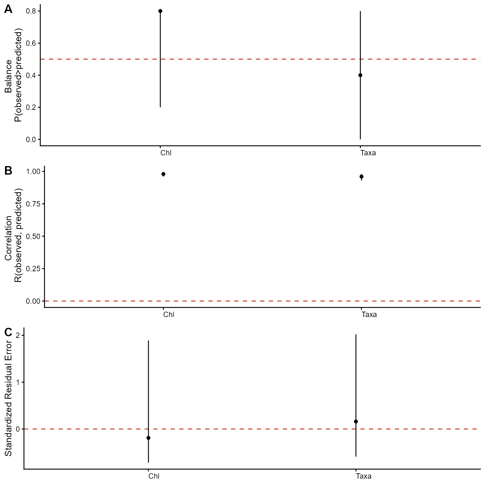
Predictive fit function
he pred_fit_ppmn() function evaluates the predictive
performance of the PPMN on new data using three complementary metrics:
Balance, Correlation, and Standardized Residual Error (SRE).
Balance measures the proportion of observations that exceed their corresponding predictions, expressed as (), where () represents the observed value and () the predicted value. This metric assesses whether the predictions are generally centered within the observed data. Values close to 0.5 indicate relatively balanced predictions, whereas values approaching 0 indicate that the model tends to overpredict the observations. Conversely, values approaching 1 indicate that the model tends to underpredict the observations.
measures the strength and direction of the linear relationship between observed and predicted values. A correlation close to 1 indicates a strong positive association, suggesting that predictions increase as observed values increase. A correlation close to 0 indicates little or no linear association between observations and predictions, whereas a negative correlation indicates that predictions tend to change in the opposite direction to the observations. Values approaching −1 indicate a strong negative linear relationship.
The standardize residual error (SRE) is calculated by dividing the residual error for each child vertex () and Monte Carlo simulation () by the estimated standard deviation of the corresponding residual distribution. The SRE expresses the magnitude of prediction errors relative to the variability of the residuals. Values close to 0 indicate that predictions closely match the observed values, whereas an absolute SRE of approximately 1 indicates that the prediction error is equivalent to one estimated standard deviation of the residual distribution. Absolute values of 3 or higher indicate particularly large deviations between observed and predicted values, require further investigation.
The example below demonstrates how to apply the
pred_fit_ppmn() function to assess the predictive
performance of the PPMN using the example data set introduced above.
#Apply the pred_fit function
pred_performance <- pred_fit_ppmn(object = foundational_ppmn, new_data = df)
#Plot the results together
cowplot::plot_grid(pred_performance$plots$Balance, #Predictive balance
pred_performance$plots$Correlation, #Predictive correlation
pred_performance$plots$Stdz, #Predictive precision
ncol=1, labels = "AUTO")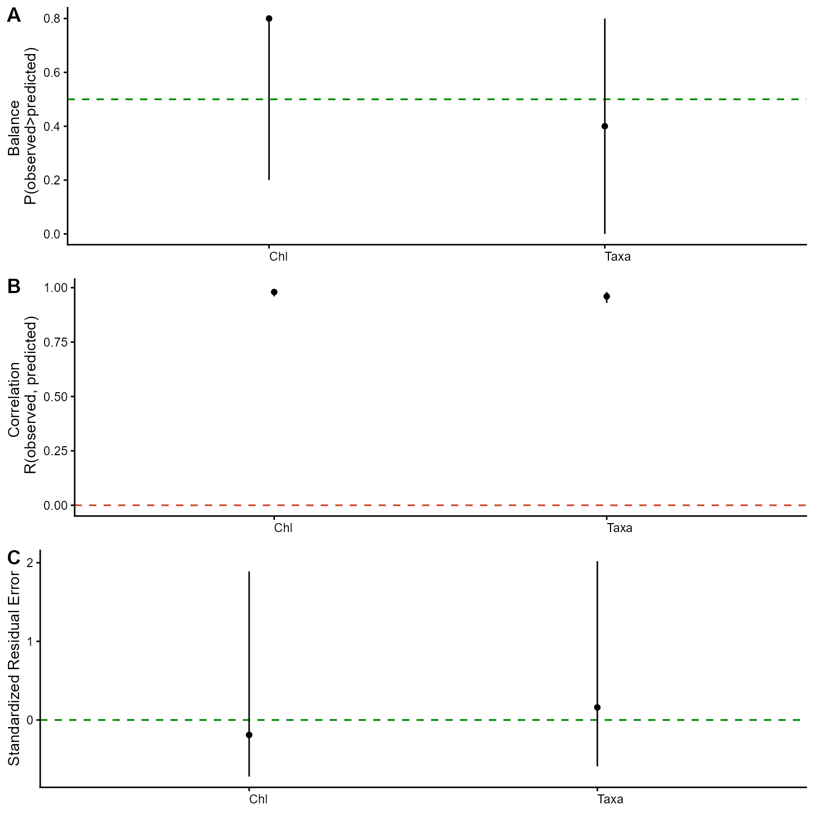
Updating the PPMN
Specifying network structure
We will now construct a more elaborate PPMN by following the steps outlined above and subsequently update it using additional data. First, we define the network structure by specifying the formula that describes the relationships between its variables.
#Load example
data(example6)
#Display head
head(example6)
#> # A tibble: 6 × 10
#> Source Authors Type Comment `function` transformation edge parameter
#> <chr> <chr> <chr> <chr> <chr> <chr> <chr> <chr>
#> 1 Macrophyte gr… Kaijse… Raw … NA class NA Char… b0
#> 2 Macrophyte gr… Kaijse… Raw … NA class NA Char… b1
#> 3 Macrophyte gr… Kaijse… Raw … NA class NA Char… b2
#> 4 Macrophyte gr… Kaijse… Raw … NA class NA Char… b3
#> 5 Macrophyte gr… Kaijse… Raw … NA class NA Char… b4
#> 6 Charophyte va… Kolada… Supp… NA class NA Char… b0
#> # ℹ 2 more variables: estimate <dbl>, error <dbl>
#Set the formula of the full network
formula=list(c(fun="sigmoidal", edge="Chl~TP", trans="log",
prior_mu_b0=100, prior_se_b0=50, trunc_a_b0=0,
prior_mu_b1=6.2, prior_se_b1=1.6,
prior_mu_b2=0.15, prior_se_b2=1, trunc_a_b2=0),
c(fun="log10", edge="Chl~TP", trans="log10"),
c(fun="log", edge="Macrophytes~Chl+Temp+CO2onlyuser", trans="log"),
c(fun="class", edge="Characeae~Chl"),
c(fun="sigmoidal", edge="pH~Chl"),
c(fun="sigmoidal", edge="CO2~pH"),
c(fun="logit", edge="CO2onlyuser~HCO3", trans="log"),
c(fun="log", edge="DOC~Chl", trans="log"),
c(fun="log", trans="log", edge="DO~DOC+Temp"),
c(fun="sigmoidal", edge="HCO3~pH"))
#Build the PPMN and define size of the vertices
foundational_ppmn <- build_ppmn(formula = formula, data = example6, txt_size = 3, vertex_height = 0.3, vertex_width = 0.30, arrow_offset = 5)
#Display graph as directed bipartite network
foundational_ppmn$PlotDBN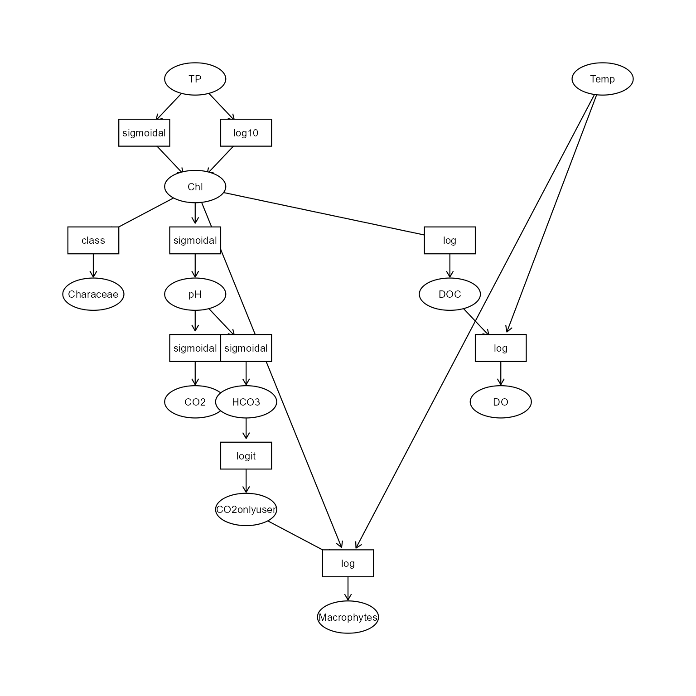
The complete foundational PPMN has now been constructed, and all previously introduced functions can be applied. However, we are particularly interested in updating the PPMN so that it can learn the joint multivariate constraints present in new data. This allows the network to improve its predictions even when only information about the root variables is provided. To achieve this, the update_ppmn() function can be applied using its default settings and an additional data set. Through Generalized Bayesian Updating, the PPMN adjusts its parameter distributions to better reflect the multivariate relationships observed in the new data, while retaining information synthesized in the foundational network.
Default training mode
#Load example of training data
data(train_data)
#Display head
head(train_data)
#> # A tibble: 6 × 10
#> TP Temp Chl pH HCO3 DO Characeae Macrophytes CO2onlyuser DOC
#> <dbl> <dbl> <dbl> <dbl> <dbl> <dbl> <dbl> <dbl> <dbl> <dbl>
#> 1 6 9.30 7.05 5.94 NA 5.50 0 6 0.833 NA
#> 2 46 16.7 7.9 8.2 146. 6.04 1 16 0.375 NA
#> 3 86.6 14.4 11 7.84 NA 6.96 1 24 0.292 8.35
#> 4 195. 7.8 22.4 8.79 NA 12.5 0 7 0.286 NA
#> 5 44.6 19 13 7.85 NA 8.68 1 14 0.286 NA
#> 6 12.0 17.0 2.6 5.86 NA NA 0 6 0.833 NA
#Update the foundational ppmn
updated_ppmn <- update_ppmn(object = foundational_ppmn, new_data = train_data)
#Display the residuals
updated_ppmn$Residuals$resid_boxplot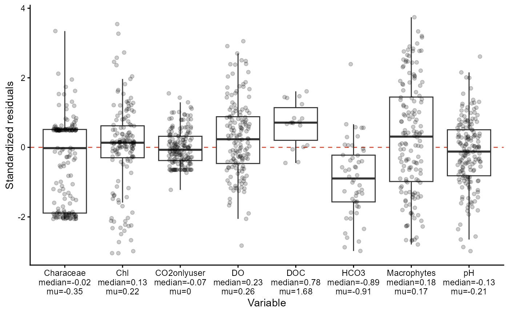
Eye-balling the residual distributions suggests that the PPMN generally produces reasonably centered predictions. For most variables, zero falls within the interquartile range (25th–75th percentiles), indicating relatively limited systematic deviation between observed and predicted values. DOC and HCO3 are notable exceptions, showing a greater displacement from zero. However, these deviations are not particularly extreme, as zero still falls within the wider interval defined by the 5th and 95th percentiles. Nevertheless, these discrepancies warrant further investigation by examining the marginal predictions of both variables.
#check the marginal curve of the edge function predicting DOC
pl_doc <- marginal_ppmn(updated_ppmn, data = train_data, child = "DOC")
#check the marginal curve of the edge function predicting HCO3
pl_hco3 <- marginal_ppmn(updated_ppmn, data = train_data, child = "HCO3")
cowplot::plot_grid(pl_doc[[1]], pl_hco3[[1]], labels = "AUTO")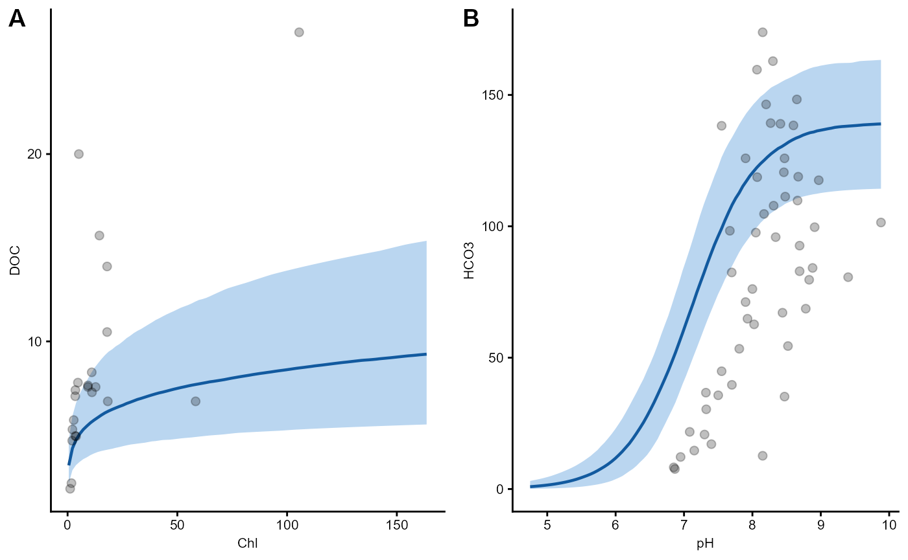
Although the marginal predictions of the PPMN generally follow the observed data, the updating procedure optimizes predictive loss across the entire network rather than fitting each edge function independently. Because the new dataset is relatively sparse, with many missing observations, the information available to constrain individual relationships is limited. Consequently, discrepancies in particular marginal predictions may have relatively little influence on the overall update.Furthermore, the foundational PPMN synthesizes information from numerous published studies, whereas the newly provided data set represents only a single additional study. This raises a question: should the model disregard all previously accumulated information to achieve a near perfect fit to the new observations? Arguably not. The purpose of Generalized Bayesian Updating is not to replace previous information with each new data set, but to integrate new information with existing expectations. Disagreement between the model and new observations should therefore be evaluated critically, rather than automatically forcing the model to conform to the latest data.
Multi-edge function
The PPMN allows multiple competing edge functions to predict the same child variable. In the network presented above, for example, the historical log-linear relationship, (), competes with a sigmoidal function describing the same relationship.
Initially, all competing edge functions are assigned equal weights, calculated as (1/M), where (M) is the number of competing functions. In this example, both functions therefore receive an initial weight of (1/2 = 0.5). As more competing edge functions are introduced, their individual initial weights decrease accordingly.
When new data become available, these weights are updated according to the relative predictive performance of the competing functions. Functions that better predict the observed data receive greater weights, increasing their contribution to subsequent predictions. In this way, the PPMN can learn which functional relationships are better supported by the available data without requiring a single edge function to be selected a priori.
#foundational weights for the multi-edge function
foundational_ppmn$FunctionWeights$Chl
#> ef1 ef2
#> 0.5 0.5
#update weights for the multi-edge function
updated_ppmn$FunctionWeights$Chl
#> ef1 ef2
#> 0.97179641 0.02820359
#what is the id of ef1 (edge function1) and ef2 (edge function2)
updated_ppmn$EdgeFunctions
#> id child f edge fun trans
#> 1 ef1 Chl 1 Chl~TP sigmoidal log
#> 2 ef2 Chl 2 Chl~TP log10 log10
#> 3 ef3 Macrophytes 1 Macrophytes~Chl+Temp+CO2onlyuser log log
#> 4 ef4 Characeae 1 Characeae~Chl class <NA>
#> 5 ef5 pH 1 pH~Chl sigmoidal <NA>
#> 6 ef6 CO2 1 CO2~pH sigmoidal <NA>
#> 7 ef7 CO2onlyuser 1 CO2onlyuser~HCO3 logit log
#> 8 ef8 DOC 1 DOC~Chl log log
#> 9 ef9 DO 1 DO~DOC+Temp log log
#> 10 ef10 HCO3 1 HCO3~pH sigmoidal <NA>
#> parents
#> 1 TP
#> 2 TP
#> 3 Chl+Temp+CO2onlyuser
#> 4 Chl
#> 5 Chl
#> 6 pH
#> 7 HCO3
#> 8 Chl
#> 9 DOC+Temp
#> 10 pHFollowing Generalized Bayesian Updating (GBU), the weight assigned to the sigmoidal function increased from 50% to 93%, whereas the weight of the log10-log10-linear function decreased from 50% to 7%. These substantial shifts indicate that the observed data are better predicted by the sigmoidal function.
Initially, both functions were considered equally plausible, with weights of 0.5 each. After updating, the sigmoidal function accounts for 93% of the combined model weight. We can express this change in relative support using a quantity analogous to a Bayes factor.
Under conventional Bayesian model comparison, the posterior odds between two competing hypotheses are given by: The Bayes factor therefore describes how much the observed data change the relative support for competing models. By analogy, we can calculate a loss-based pseudo-Bayes factor from the ratio of updated to initial model odds:
Thus, the relative support for the sigmoidal function has increased approximately 13-fold compared with the log10-log10-linear function.
Importantly, this quantity is not a conventional Bayes factor. The PPMN uses Generalized Bayesian Updating, which updates parameter and model weights through loss functions rather than an explicitly specified likelihood. Consequently, the resulting pseudo-Bayes factor should be interpreted as a measure of the change in relative model support under the chosen loss function and learning rate, rather than as a ratio of marginal likelihoods.
Nevertheless, it provides an intuitive way to quantify how strongly the available data favor one competing edge function over another.
#check the marginal curve of the multi-edge function before updating
pl_chl1 <- marginal_ppmn(foundational_ppmn, data = train_data, child = "Chl")
#check the marginal curve of the edge function predicting HCO3
pl_chl2 <- marginal_ppmn(updated_ppmn, data = train_data, child = "Chl")
cowplot::plot_grid(pl_chl1[[3]], pl_chl2[[3]], labels = "AUTO")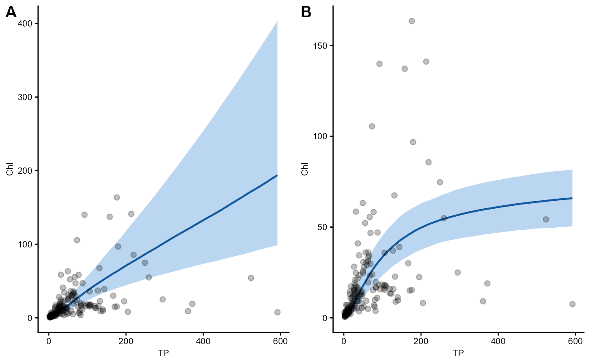
Fixed information gain training
It is also possible to manually control the strength of Generalized
Bayesian Updating (GBU), thereby influencing how strongly the
generalized posterior concentrates around the best performing parameter
combinations. This is achieved by setting method = "manual"
and specifying up_character as a proportion between 0 and 1. The
learning rate
()
is then determined indirectly from the fraction of particles with the
lowest predictive loss, assigning greater weight to better performing
parameter combinations. This allows the user to control posterior
concentration rather than relying on the default hold-out
calibration.
#Update the foundational ppmn allowing the data to dominate by 95%
updated_ppmn_5 <- update_ppmn(object = foundational_ppmn, new_data = train_data, method = "manual", up_character = 0.05)
#Update the foundational ppmn allowing the data to dominate by 80%
updated_ppmn_50 <- update_ppmn(object = foundational_ppmn, new_data = train_data, method = "manual", up_character = 0.2)
#Update the foundational ppmn allowing the data to dominate by 50%
updated_ppmn_95 <- update_ppmn(object = foundational_ppmn, new_data = train_data, method = "manual", up_character = 0.5)
#Display the residuals on top of each other
cowplot::plot_grid(
updated_ppmn_5$Residuals$resid_boxplot,
updated_ppmn_50$Residuals$resid_boxplot,
updated_ppmn_95$Residuals$resid_boxplot,
ncol=1, labels=c("Best 5%",
"Best 20%",
"Best 50%"),
label_y=1.02, label_x=1.25)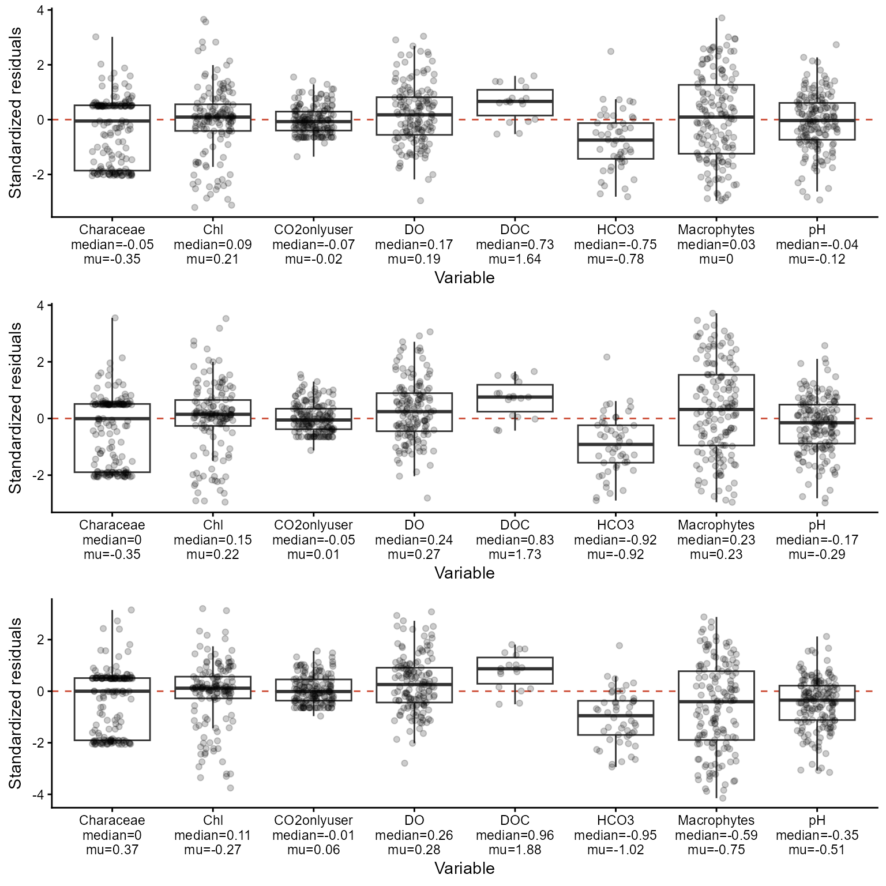
The text below each boxplot provides the median and mean (mu) of the residuals, indicating how well they are centered around zero. For Characeae, which is a binary response variable, the residuals are standardized using Pearson residuals, dividing the difference between observed and predicted values by the expected standard deviation, . Although this standardization is appropriate for binary data, the residual distribution remains discrete and potentially asymmetric, particularly because the observations are dominated by presences. This explains the visible gap in the distribution of residuals for Characeae.
Overall, the residuals of most variables appear reasonably well centered around zero, with the notable exceptions of DOC and HCO3. These deviations are consistent with the discrepancies identified earlier when examining the marginal predictions of the PPMN.
Display marginal trends
#Create the marginal plots
marginal_fig_HCO3 <- marginal_ppmn(updated_ppmn, child = "HCO3", data = train_data)
marginal_fig_DOC <- marginal_ppmn(updated_ppmn, child = "DOC", data = train_data)
#Plot them togheter
cowplot::plot_grid(marginal_fig_HCO3[[1]],
marginal_fig_DOC[[1]],
ncol=1, labels = "AUTO")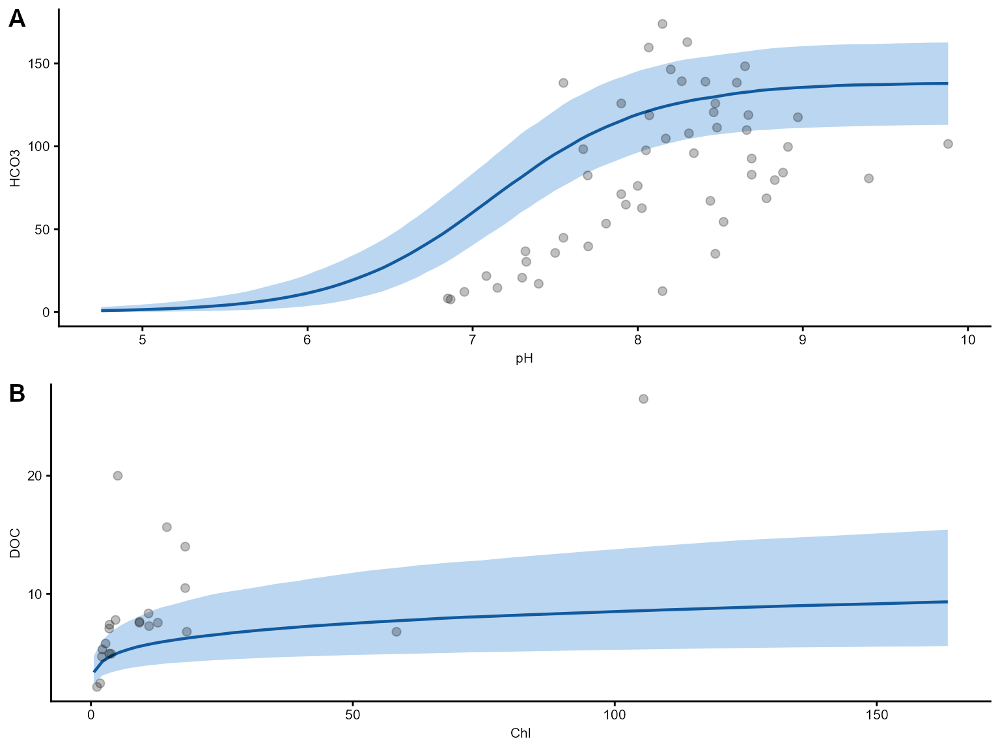
Examining these figures provides a clearer understanding of why the residuals for HCO3 are shifted: the PPMN systematically over or under predicts the observed values. For DOC, the discrepancy is even more apparent, as the log-linear edge function appears not to represent the pattern observed in the new data.
There are at least three plausible explanations for these discrepancies: (1) the selected edge function does not adequately describe the underlying relationship; (2) the information obtained from the literature is insufficient (not enough samples) or does not accurately represent the relationship; or (3) the new data are of insufficient quality or are not representative of the conditions the model is intended to describe.
Determining which explanation is most plausible requires further investigation and discussion. Importantly, identifying disagreement between the model and the data should not be regarded as a failure. Such discrepancies may be inconvenient or contradict our expectations, but they should not be ignored simply because they are undesirable. Instead, they provide an learning opportunity.
Apply predictive fit to validation data
#Assess the performance of the updated ppmn on the validation data
pred_fit_val <- pred_fit_ppmn(updated_ppmn, val_data, rotate_x = 45, hjust = 1)
#Plot the results of the updated model applied on the validation data
cowplot::plot_grid(pred_fit_val$plots$Balance,
pred_fit_val$plots$Correlation,
pred_fit_val$plots$Stdz,
labels="AUTO", ncol=1)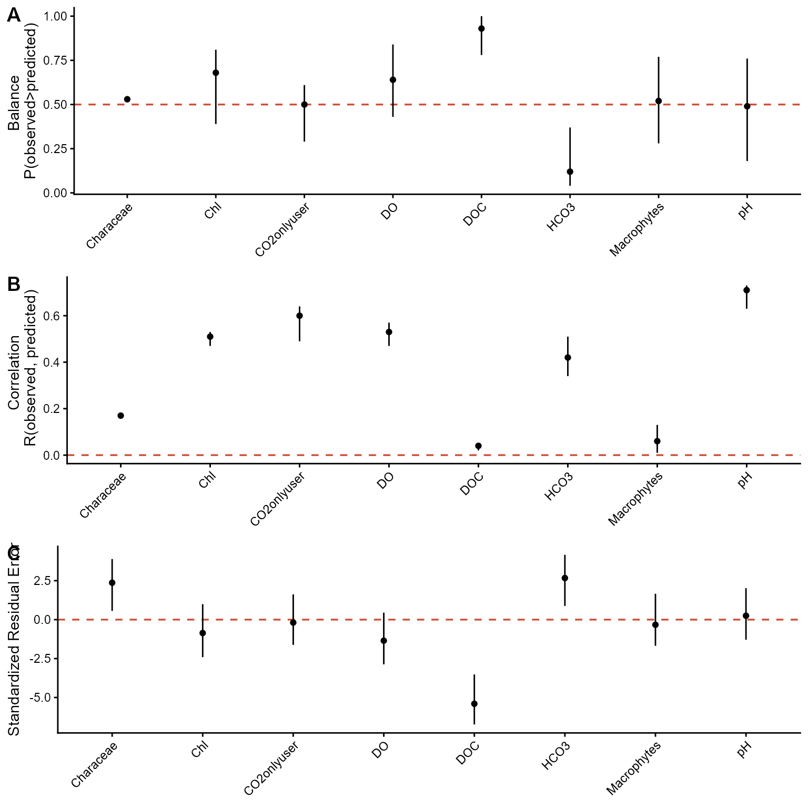
Also here we see that HCO3 and DOC deviate. Based on this I accept the deviation of HCO3. I have another data set that only contains HCO3~pH containing which shows a ‘perfect’ fit. However, DOC~Chl I can not explain properly. This would need further explanation from literature. Having assessed on the validation data we could accepted the discrepancies and notate them or update on another data, or reconstruct the PPMN.
Displacement test
The displacement test evaluates how much the PPMN’s predictions would need to shift to best align its central predictions with a new dataset. To assess this, we compare the predictions obtained from a data-dominated update with those of the original PPMN. If the best-fitting predictions fall substantially outside the range of prior predictions, this indicates disagreement between the model’s expectations and the observed data. Conversely, if little or no displacement is required, the original predictions are already well aligned with the data.
The table below shows that DOC is the only variable exhibiting substantial disagreement with the model. The accompanying forest plot illustrates the magnitude and direction of displacement for each variable. Importantly, displacement does not tell us whether the discrepancy originates from the model or the data. It simply identifies where the observations and the model’s prior expectations disagree.
disp_test <- disp_ppmn(updated_ppmn, val_data)
print(disp_test)
#>
#> Displacement
#> -----------------
#>
#> Variable median map mu ll ul
#> Chl -0.107 -0.095 -0.055 -0.505 0.646
#> pH 0.262 0.283 0.230 -0.622 0.956
#> HCO3 0.129 0.136 0.122 -0.801 0.999
#> DO -0.808 -1.005 -0.766 -1.891 0.477
#> Characeae 0.195 0.236 -0.016 -1.270 0.476
#> Macrophytes -0.388 -0.457 -0.307 -1.131 0.744
#> CO2onlyuser 0.377 0.360 0.440 -0.517 1.729
#> DOC -2.268 -2.213 -2.212 -3.327 -0.912
disp_test$plot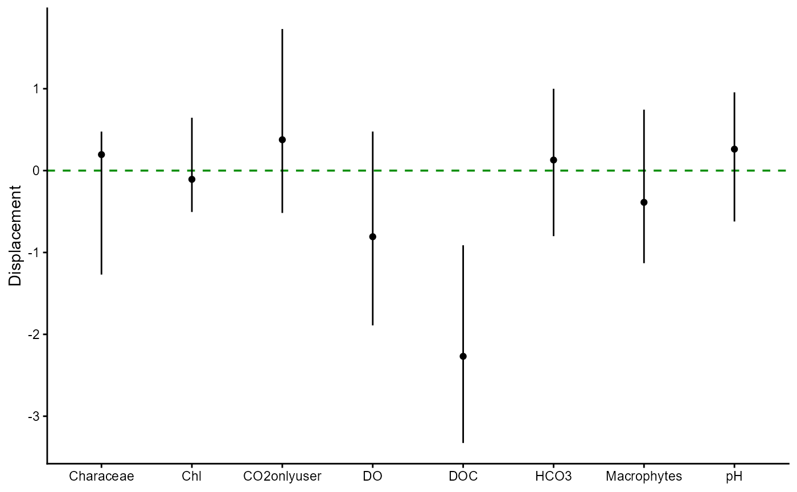
Correlation matrix and parameter extraction
Although the parameter estimates and correlation matrix can be
extracted directly from the PPMN object, the HeMiE package provides two
convenience functions, extract_covar_ppmn() and
extract_param_ppmn(), to simplify this process. These
functions allow users to inspect the synthesized parameter estimates and
the correlation structure between parameters without manually extracting
and organizing the information. An example demonstrating their use is
provided below.
cor_mat <- extract_covar_ppmn(updated_ppmn)
cor_mat$corplot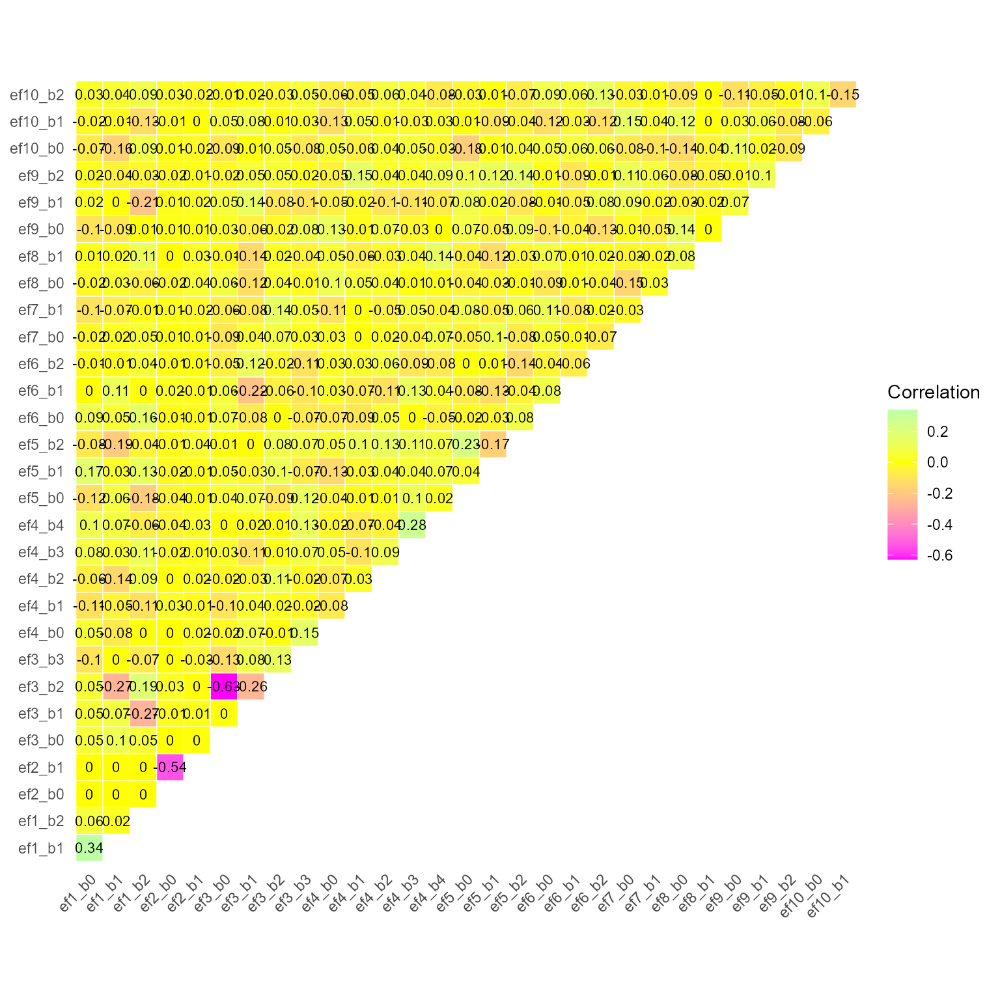
The following function can be used to extract the parameter estimates from the PPMN, providing both the prior and generalized posterior estimates for comparison.
params <- extract_param_ppmn(updated_ppmn)
print(params)
#>
#> PPMN parameter estimates
#> ------------------------
#>
#> Prior parameters
#> ----------------
#> ef parameter mu ll ul
#> ef1 b0 71.534 49.350 93.719
#> ef1 b1 4.651 4.183 5.119
#> ef1 b2 0.616 0.471 0.762
#> ef2 b0 -0.812 -1.004 -0.620
#> ef2 b1 1.198 1.086 1.309
#> ef3 b0 2.621 2.164 3.078
#> ef3 b1 -0.310 -0.398 -0.221
#> ef3 b2 0.079 -0.417 0.575
#> ef3 b3 -0.338 -0.389 -0.286
#> ef4 b0 11.739 7.777 15.700
#> ef4 b1 13.204 12.360 14.047
#> ef4 b2 38.497 34.840 42.154
#> ef4 b3 38.634 36.040 41.228
#> ef4 b4 0.525 0.495 0.556
#> ef5 b0 8.830 8.216 9.444
#> ef5 b1 -6.376 -9.697 -3.055
#> ef5 b2 5.717 3.071 8.363
#> ef6 b0 60.027 17.379 102.675
#> ef6 b1 6.775 5.805 7.744
#> ef6 b2 -0.350 -0.515 -0.184
#> ef7 b0 2.771 2.582 2.960
#> ef7 b1 -0.742 -0.790 -0.694
#> ef8 b0 1.290 0.969 1.611
#> ef8 b1 0.170 0.096 0.243
#> ef9 b0 2.890 2.803 2.977
#> ef9 b1 -0.039 -0.078 0.001
#> ef9 b2 -0.232 -0.276 -0.187
#> ef10 b0 141.637 117.310 165.964
#> ef10 b1 7.102 6.869 7.336
#> ef10 b2 0.477 0.342 0.612
#>
#> Generalized posterior parameters
#> --------------------------------
#> ef parameter mu ll ul
#> ef1 b0 69.578 51.046 91.045
#> ef1 b1 4.602 4.242 4.967
#> ef1 b2 0.670 0.543 0.796
#> ef2 b0 -0.916 -1.080 -0.766
#> ef2 b1 1.108 1.026 1.174
#> ef3 b0 2.549 2.152 2.961
#> ef3 b1 -0.284 -0.372 -0.188
#> ef3 b2 -0.031 -0.266 0.181
#> ef3 b3 -0.339 -0.392 -0.283
#> ef4 b0 11.565 7.141 16.049
#> ef4 b1 13.223 12.451 13.909
#> ef4 b2 38.689 35.104 42.757
#> ef4 b3 38.591 35.730 41.166
#> ef4 b4 0.523 0.495 0.553
#> ef5 b0 8.705 8.238 9.167
#> ef5 b1 -5.863 -9.290 -3.023
#> ef5 b2 6.321 4.067 9.056
#> ef6 b0 60.027 17.379 102.675
#> ef6 b1 6.775 5.805 7.744
#> ef6 b2 -0.350 -0.515 -0.184
#> ef7 b0 2.766 2.578 2.954
#> ef7 b1 -0.744 -0.792 -0.701
#> ef8 b0 1.327 0.969 1.647
#> ef8 b1 0.179 0.109 0.249
#> ef9 b0 2.893 2.821 2.984
#> ef9 b1 -0.037 -0.076 0.011
#> ef9 b2 -0.227 -0.269 -0.189
#> ef10 b0 141.099 117.259 163.183
#> ef10 b1 7.118 6.881 7.331
#> ef10 b2 0.471 0.335 0.599Edge functions
There are different functions that can be used in the PPMN. These are not limited to the ones provided here. Upon request I can add different functions that might be useful for the user. Of course the standard functions consist of the linear equation and link functions used with GLMs. The standard LM and GLM with random effect structure can be fit with most basic R-packages (e.g., lmer, glmmTMB or gamlss). Not that standard practice, such as assessing the residuals is here implicitly assumed.
The syntax used for the PPMN express the equation using “b” ( or ) for “b0” ( or ) or “b1” ( or ) etc. Each parameter in the equation follow the notation b0, b1, b2, …, etc.
Linear equation
For the linear equation the standard expression is used of which the
name is identity. In this equation Where
describes the number of parents (e.g., 1, 2, 3, …, P). In the linear
equation also the number of parents, with exception of 0 is the number
of parameters.
Log-linear equation
For the log-linear equation the standard expression is also used of
which the name is log.
Sigmoidal equation
For the three parameter sigmoidal equation used of which the name is
sigmoidal. b0 describes the asymptote, b1 the midpoint and
b2 the scale parameter. Indeed multiple parents are possible with this
function which continues at b4. The parameters then enter as
and continue from
onward. However, this function seems relatively unstable.
This equation can be fitted with the
nls function from the stats package in R. See
the example below
#load the stats package
library(stats)
#Model parameters
b0 <- 200
b1 <- 6
b2 <- 0.5
#Independent variables
x <- runif(150, 3.5, 10)
#Dependent variable
eta <- b0/(1+exp((b1-x)/b2))
#Add some noise
y <- rgamma(length(eta), eta^2/30^2, eta/30^2)
#Create data frame
df <- data.frame(x, y)
#Plot as figure
ggplot(df, aes(x, y))+
geom_point(size=3, alpha=0.3)+
geom_line(data=data.frame(x, eta), aes(x, eta), inherit.aes = F,
col="dodgerblue3", lwd=1.2)+
theme_classic()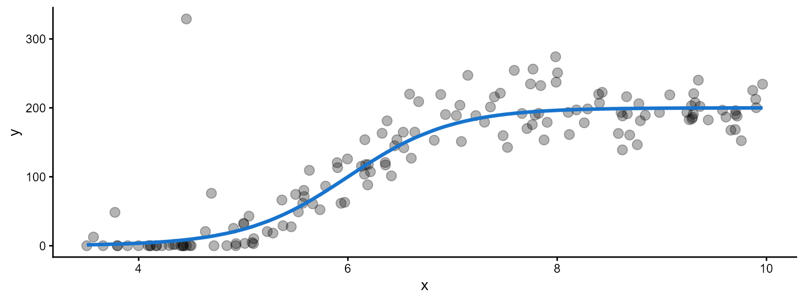
#Fit model
sigmoidal_mod <- nls(y ~ SSlogis(x, b0, b1, b2),
data = df,
control = nls.control(maxiter = 5000, warnOnly = TRUE),
start = list(b0 = 200, b1=5, b2=.5))
#Display estimated parameters that are being used in the PPMN
summary(sigmoidal_mod)
#>
#> Formula: y ~ SSlogis(x, b0, b1, b2)
#>
#> Parameters:
#> Estimate Std. Error t value Pr(>|t|)
#> b0 199.37603 4.89895 40.698 < 2e-16 ***
#> b1 5.94509 0.06874 86.483 < 2e-16 ***
#> b2 0.45420 0.06073 7.478 6.29e-12 ***
#> ---
#> Signif. codes: 0 '***' 0.001 '**' 0.01 '*' 0.05 '.' 0.1 ' ' 1
#>
#> Residual standard error: 36.76 on 147 degrees of freedom
#>
#> Number of iterations to convergence: 7
#> Achieved convergence tolerance: 2.376e-06Gompertz equation
For the gompertz equation the name is gompertz. In this
equation, b0 is the asymptote, b1 is the displacement constant and b2 is
the growth rate. This function also allows other parameters to access
the equation
similar to the sigmoidal equation, but has the same curse.
This equation can also be fitted with
the nls function.
#Model parameters
b0 <- 200
b1 <- 6
b2 <- 1
#Independent variables
x <- runif(150, 3.5, 10)
#Dependent variable
eta <- b0*exp(-exp(b1-b2*x))
#Add some noise
y <- rgamma(length(eta), eta^2/30^2, eta/30^2)
#Create data frame
df <- data.frame(x, y)
#Plot as figure
ggplot(df, aes(x, y))+
geom_point(size=3, alpha=0.3)+
geom_line(data=data.frame(x, eta), aes(x, eta), inherit.aes = F,
col="dodgerblue3", lwd=1.2)+
theme_classic()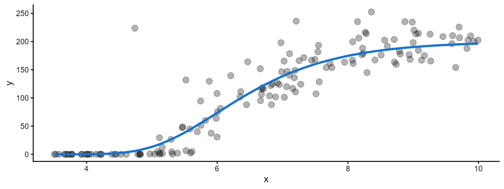
#Fit model
gompertz_mod <- nls(y ~ b0 * exp(-exp(b1 - b2*x)),
data = df,
control = nls.control(maxiter = 5000, warnOnly = TRUE),
start = list(b0 = 200, b1 = 5, b2 = 1))
#Display estimated parameters that are being used in the PPMN
summary(gompertz_mod)
#>
#> Formula: y ~ b0 * exp(-exp(b1 - b2 * x))
#>
#> Parameters:
#> Estimate Std. Error t value Pr(>|t|)
#> b0 194.1627 5.5125 35.222 <2e-16 ***
#> b1 6.0553 0.6131 9.877 <2e-16 ***
#> b2 1.0028 0.1028 9.752 <2e-16 ***
#> ---
#> Signif. codes: 0 '***' 0.001 '**' 0.01 '*' 0.05 '.' 0.1 ' ' 1
#>
#> Residual standard error: 23.17 on 147 degrees of freedom
#>
#> Number of iterations to convergence: 6
#> Achieved convergence tolerance: 2.968e-06Asymptotic-linear
For the asymptotic-linear equation the name is
asymptotic. In this equation, b0 is the asymptote, b1 is
the displacement constant and b2 is the growth rate. This function also
allows other parameters to access the equation
similar to the sigmoidal equation, but has the same curse.
#Model parameters
b0 <- 100
b1 <- 120
b2 <- 0.1
#Independent variables
x <- runif(150, 1, 100)
#Dependent variable
eta <- b0-b1*exp(-b2*x)
#Add some noise
y <- rgamma(length(eta), eta^2/20^2, eta/20^2)
#Create data frame
df <- data.frame(x, y)
#Plot as figure
ggplot(df, aes(x, y))+
geom_point(size=3, alpha=0.3)+
geom_line(data=data.frame(x, eta), aes(x, eta), inherit.aes = F,
col="dodgerblue3", lwd=1.2)+
theme_classic()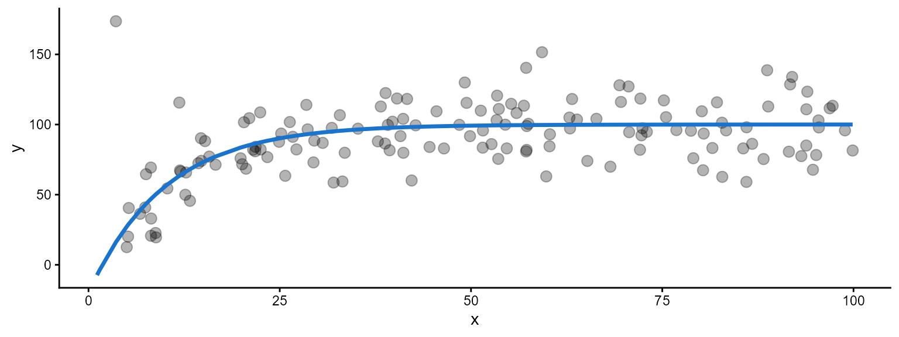
#Fit model
asymptotic_mod <- nls(
y ~ b0 - b1 * exp(-b2 * x),
data = df,
control = nls.control(maxiter = 5000, warnOnly = TRUE),
start = list( b0 = 200, b1 = 120, b2 = 0.1))
#Display estimated parameters that are being used in the PPMN
summary(asymptotic_mod)
#>
#> Formula: y ~ b0 - b1 * exp(-b2 * x)
#>
#> Parameters:
#> Estimate Std. Error t value Pr(>|t|)
#> b0 99.94790 3.03751 32.905 < 2e-16 ***
#> b1 73.36539 13.89744 5.279 4.69e-07 ***
#> b2 0.06485 0.01898 3.417 0.000822 ***
#> ---
#> Signif. codes: 0 '***' 0.001 '**' 0.01 '*' 0.05 '.' 0.1 ' ' 1
#>
#> Residual standard error: 21.94 on 144 degrees of freedom
#>
#> Number of iterations to convergence: 15
#> Achieved convergence tolerance: 4.891e-06
#> (3 observations deleted due to missingness)Gaussian equation
For the Gaussian equation the name is gaussian. b0
represents the peak (max), b1 the mean and b2 the standard
deviation.
#Model parameters
b0 <- 200
b1 <- 6
b2 <- 1
#Independent variables
x <- runif(150, 1.5, 9)
#Dependent variable
eta <- b0*exp(-0.5*((x-b1)/b2)^2)
#Add some noise
y <- rgamma(length(eta), eta^2/30^2, eta/30^2)
#Create data frame
df <- data.frame(x, y)
#Plot as figure
ggplot(df, aes(x, y))+
geom_point(size=3, alpha=0.3)+
geom_line(data=data.frame(x, eta), aes(x, eta), inherit.aes = F,
col="dodgerblue3", lwd=1.2)+
theme_classic()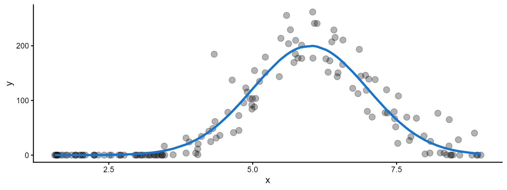
#Fit model
gaussian_mod <- nls(y ~ b0 * exp(-0.5 * ((x - b1)/b2)^2),
data = df,
control = nls.control(maxiter = 5000, warnOnly = TRUE),
start = list(b0 = 200,b1 = 6, b2 = 1.5))
#Display estimated parameters that are being used in the PPMN
summary(gaussian_mod)
#>
#> Formula: y ~ b0 * exp(-0.5 * ((x - b1)/b2)^2)
#>
#> Parameters:
#> Estimate Std. Error t value Pr(>|t|)
#> b0 195.79702 4.78229 40.94 <2e-16 ***
#> b1 6.02269 0.03004 200.49 <2e-16 ***
#> b2 1.03777 0.02843 36.51 <2e-16 ***
#> ---
#> Signif. codes: 0 '***' 0.001 '**' 0.01 '*' 0.05 '.' 0.1 ' ' 1
#>
#> Residual standard error: 23.45 on 147 degrees of freedom
#>
#> Number of iterations to convergence: 4
#> Achieved convergence tolerance: 4.095e-07Bayesian classifier
The Bayesian classifier is an equation that makes use of the mean and
standard deviation of two groups. There is no process of fitting with
maximum likelihood necessary. The name of this edge function is
class. In this equation b0 and b1 are the mean and standard
deviation of group 1, respectively. b2 and b3 are the mean and standard
deviation of group 2. b5 is the proportion of group 1.
For the sake of displaying the pattern.
#Model parameters
b0 <- 20
b1 <- 5
b2 <- 100
b3 <- 25
b4 <- 0.5
#Independent variables
x <- runif(150, 10, 80)
#Dependent variable
p <- exp(dnorm(x, b0, b1, log=T) - dnorm(x, b2, b3, log=T))
eta <- (p*b4)/((p*b4)+(1-b4))
#Add some noise
y <- rbinom(length(eta), 1, eta)
#Create data frame
df <- data.frame(x, y)
#Plot as figure
ggplot(df, aes(x, y))+
geom_point(size=3, alpha=0.3)+
geom_line(data=data.frame(x, eta), aes(x, eta), inherit.aes = F,
col="dodgerblue3", lwd=1.2)+
theme_classic()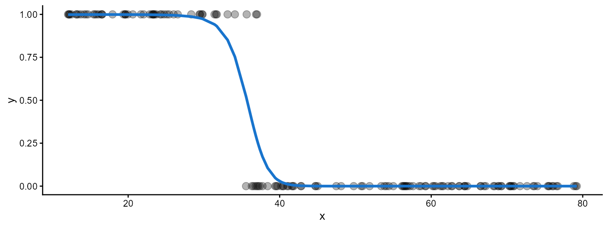
Disclaimer: Statistical and causal interpretation
The updating procedure produces a generalized posterior distribution by combining prior information with a loss function rather than a formally specified likelihood. Consequently, although the resulting distribution provides a probabilistic representation of updated parameter uncertainty, it should not automatically be interpreted as a conventional/orthodox Bayesian posterior. In particular, generalized posterior probabilities and credible intervals do not necessarily possess the calibration properties associated with a correctly specified likelihood-based Bayesian model.
At its current stage of development, the PPMN is primarily an exploratory and predictive framework, not a method for attribution of causal claims. The directed relationships within the network represent assumed dependencies derived from existing literature, ecological knowledge, and theoretical expectations. Some relationships may reflect well-established mechanisms, such as the influence of pH on carbonate speciation and the relative abundance of dissolved CO₂ and bicarbonate (HCO₃⁻). However, these relationships are specified a priori (front to back) rather than inferred as causal relationships from the data (back to front). Consequently, neither the direction of an edge nor changes in predicted responses should, by themselves, be interpreted as evidence that one variable causes another to change.
Using the term causal (or effect as follows from a cause) requires more than specifying the direction of dependencies within a network. It depends on whether the assumptions necessary for causal identification are satisfied, including positivity, adequate control of confounding, and the absence of relevant omitted confounders. Consequently, although a network may incorporate relationships supported by established causal mechanisms, it does not independently identify or if the term cause (or effect) are justified. These requirements are not specific to the PPMN but apply generally to statistical models used for causal inference. Although the PPMN can incorporate relationships supported by established causal mechanisms, its current implementation is intended for exploratory and predictive purposes rather than causal attribution.